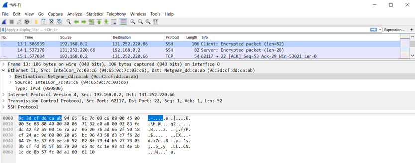
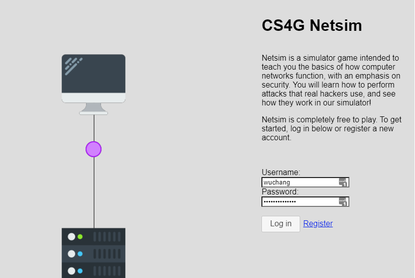

sudo apt-get update
sudo apt-get install –y wiresharkPerform the following tasks, using screenshots that include your OdinID to indicate what you have found.
ifconfig command to find the IP address and hardware address of the local virtual ethernet card interface. netstat -rn to find default router's IP addressarp to find its hardware addressLaunch Wireshark via sudo wireshark
icmp (the protocol used by the ping command)enp0s3), then begin a captureping www.google.comClick on the request packet in the top window of the wireshark UI. Then, in the middle window, expand the data-link layer packet and click on the source and destination hardware addresses.

Repeat using the response packet.

Create an account and complete all levels of Netsim
Upon completion of all levels